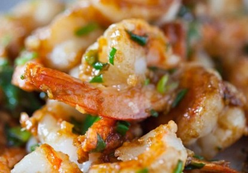
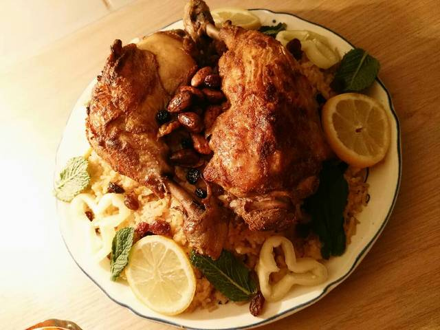
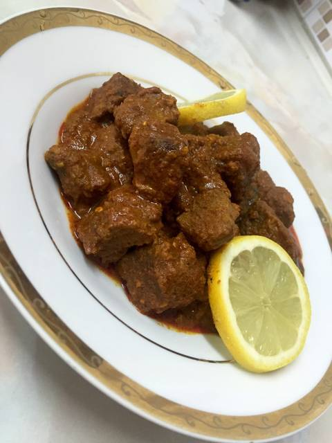

اﻟﺠﻤﺒﺮي ﺑﺎﻟﺼﻮﻳﺎ ﺻﻮص و اﻟﺜﻮم
المقادير
ﻓﻠﻔﻞ أﺳﻮد وﻛﻤﻮن , رﺷﺔ اوراق اﻟﺸﺒﺖ و اﻟﺒﻘﺪوﻧﺲ اﻟﻤﻘﻄﻌﻪ , 1/3 ﻛﻮب ﺻﻮﻳﺎ ﺻﻮص , 1/2 1 ﻣﻠﻌﻘﺔ ﻛﺒﯿﺮة ﻓﻠﻔﻞ ﺣﺎر ﻣﺠﺮوش , ﺣﺴﺐ اﻟﺮﻏﺒﺔ ﺑﺎﺑﺮﻳﻜﺎ , 1/2 1 ﻣﻠﻌﻘﺔ ﺻﻐﯿﺮة ﺛﻮم ﻣﻘﻄﻊ , 4 ﻓﺺ زﻳﺖ زﻳﺘﻮن , 1/4 ﻛﻮب ﺟﻤﺒﺮي ﻛﺒﯿﺮ ﻣﻘﺸﺮ , 1 ﻛﯿﻠﻮ
طريقة التحضير
ﻓﻲ ﻣﻘﻼة ﻋﻠﻲ اﻟﻨﺎر ، ﻳﻮﺿﻊ اﻟﺰﻳﺖ ، اﻟﺜﻮم ، اﻟﻔﻠﻔﻞ اﻟﺤﺎر ، اﻟﻔﻠﻔﻞ اﻟﺤﻠﻮ
، و ﺗﺮﻓﻊ ﻋﻠﻲ اﻟﻨﺎر ﺣﺮارة ﻣﺘﻮﺳﻄﻪ ﺣﺘﻲ ﺗﻔﻮح اﻟﺮاﺋﺤﺔ اﻟﻌﻄﺮة .
ﻧﺮﻓﻊ درﺟﺔ اﻟﺤﺮارة ، و ﻧﻀﯿﻒ اﻟﺠﻤﺒﺮي .
ﻳﻘﻠﺐ اﻟﺠﻤﺒﺮي 3 دﻗﺎﺋﻖ ﺟﺘﻲ ﻳﺼﺒﺢ وردي اﻟﻠﻮن .
ﻧﻀﯿﻒ اﻟﺼﻮﻳﺎ ﺻﻮص ، و ﻧﻘﻠﺐ اﻟﻤﺰﻳﺞ ﺣﺘﻲ ﻳﻨﻀﺞ اﻟﺠﻤﺒﺮي
ﻧﻀﯿﻒ اﻟﻔﻠﻔﻞ و اﻟﻜﻤﻮن ، ﺛﻢ أوراق اﻟﺒﻘﺪوﻧﺲ و اﻟﺸﺒﺖ .
ﻳﻘﻠﺐ اﻟﺠﻤﺒﺮي ﺛﻢ ﻳﻘﺪم ﺣﺴﺐ اﻟﺮﻏﺒﺔ
كبسه الدجاج
المقادير
1. 4افخاد دجاج 2. بهارات لسلق الدجاج 3. ورق غار 4. رشةفليفلة حمرة 5. زنجبيل بودرة 6. رشةكاري صغيرة 7. ملح 8. حب قرنفل 9. حب هال 10. قرفة اعواد 11. بهار حب 12. بهار اسود و بهار ابيض 13. بصلة 14. جزرة صغيرة 15. لتتبيلة الدجاج نحتاج الى : 16. ملعقة كبيرةلبن 17. رشةفليفلة حمرة 18. رشةكاري 19. بودرة الثوم 20. رشةزنجبيل بودرة 21. رشةبهار اسود وابيض 22. القليل من زيت نباتي 23. لتحضير صوص البندورة نحتاج الى : 24. ١بصلة 25. ١ ملعقة كبيرةدبس بندورة 26. ١فليفلة خضرة 27. سنتوم 28. معلقة كبيرةجزر مبشور 29. ١بندورة كبيرة 30. ملح ، بهار اسود 31. فليفلة حمرة 32. 2 كاسةرز بسمتي 33. 2 كاسةمرق دجاج 34. بهارات الكبسة نحتاج الى : 35. ٢ ورقحب قرنفل 36. بهارات حب 37. رشةصغيرة كتير بودرة الثوم 38. رشةصغيرة كزبرة يابسة 39. 40. رشةكاري 41. ٣ حبهال 42. غار 43. ١عود قرفة 44. رشةزنجبيل بودرة 45. 46. بهار اسود وابيض 47. رشةفليفلة حمرة 48. بصلة ، كركم 49. زبيب لوز واي نوع مكسرات نرغب فيه 50. ماء
طريقة التحضير
الخطوة الاولى : تغسل الفروج جيداً ثم نسلق الدجاج كما كل مرة نضع بهارات السلق والبصلة والجزرة مع ماء واالفروج ويرفع على النار حتى يسلق ويصبح جاهز
بعد ان يسلق الدجاج يصفى ثم نحضر تتبيلة الدجاج لوضعه في الفرن بمزج كل مكونات التتبيلة المذكورة مسبقاً وندهن فيها الفروج المسلوق من كلا الطرفين ويوضع في الفرن على درجة ١٨٠ حتى يتحمر من الطرفين
نحضر صوص البندورة : نقلي بصلة المفرومة والفليفلة المفرومة وسن التوم مهروس حتى يدبل قليلاً ثم نضيف الجزر والبندورة المفرومة ودبس البندورة والملح وبهار والفليفلة الحمرة ثم نقلب ونغطي عليه ويترك حتى يتعقد جيداً ويترك على جنب
نفرم البصلة جوانح وتقلى مع كركم حتى يتحمر البصل قليلاً ثم تقلب مع الرز في طنجرة اخرى ونحرك جيداً حتى يآخذ الرز اللون الاصفر ثم نغطي طنجرة الرز وتغلف بنايلون جيداً بحيث لاتخرج بخار من زوايا الغطاء
ملاحظة : لانغلف الطنجرة بكاملها .. فقط نغلف مكان التقاء غطاء الطنجرة بلطنجرة نفسها حتى لايخرج بخار من الزوايا .. ثم توضع على نار هادئة جداً حتى يطبخ قليلاً بلبخار
نقلي اللوز والمكسرات ثم نصب الرز ونضع فوقه الدجاج المحمر ونضع المكسرات على الوجه مع الزبيب ويزين بلليمون والنعناع ثم يقدم الى جانب صوص البندورة
أيدام اللحم
المقادير
0.25 كيلولحم قطع صغيرة حبتانطماطم 4 ملعقةزيت نباتي ملعقتينثوم وزنجبيل مطحون حبةبصل متوسطه ملعقة طعامبهارات مشكل ملعقة طعامبابريكا ملعقة طعامكركم ملعقة طعامكاري ملعقة طعامزبادي ملعقة صلصة طماطم رشةملح ورشة كبزره رشةقرفة مطحونه +
طريقة التحضير
نفور اللحمه مع قرفة وهيل وقرنفل منكهات يعني تقريباً نصف ساعة
نفصل اللحم عن المرق ونصفي اللمرقة عشان بنستخدمها بالايدام او طاجن اللحم ونقطع اللحم ممكن هذي الطريقة قبل مانفور نعملها
نشوح البصل
ثم نصع اللحمه
ثم البهارات
ثم الزبادي والثوم والزنجبيل ونحرك وندعه ٥ دقائق
ثم نضع الطماطم المطحونه
ثم نرفع النار حتى نرى فقاعات ثم نبطئ ع الاخير
ونغطي والنار تكون مرره واطيه
وهذا بعد الاستواء تقريباً ساعة ونص يستوي مع التحريك المستمر قبل مانطفي بشوية نضع الكبزره واحب اللحم يذوب بالفم وبالعافيه